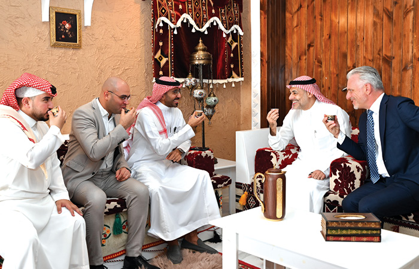
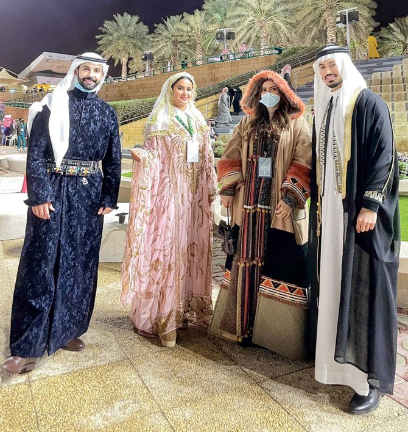
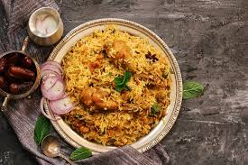

Saudi Arabia is deeply influenced by Islamic traditions.
Family, hospitality, and respect play important roles in everyday life.
This is One of their cultural songs named Jeddah Al Balad
Saudi Arabia is home to Islam's holiest sites, featuring the world's largest mosque, Masjid al-Haram in Mecca, which surrounds the Kaaba.

Traditional Saudi Arabian dress is rooted in Islamic modesty and desert culture, featuring the white thobe (long robe) and ghutra/shemagh (head covering) for men, and the abaya (black cloak) for women. These garments are designed to be loose-fitting and breathable, offering protection from the sun while maintaining cultural identity.

Traditional Saudi Arabian food is characterized by rich, spiced dishes featuring rice, lamb, chicken, and wheat, deeply rooted in Bedouin culture and hospitality. The national dish is Kabsa, an aromatic rice and meat dish.